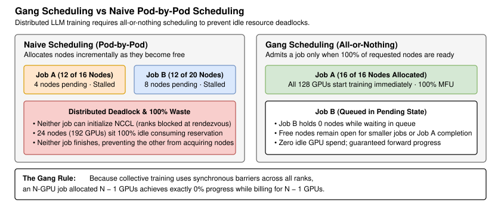
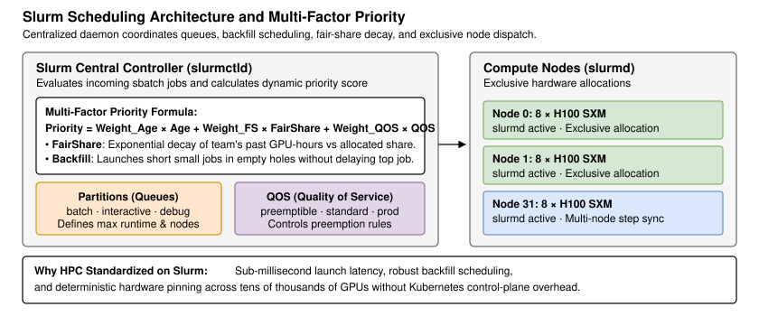
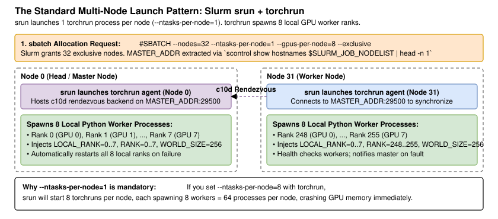
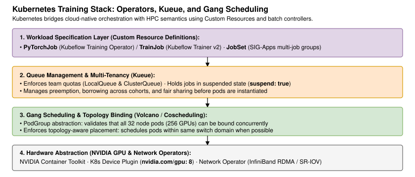
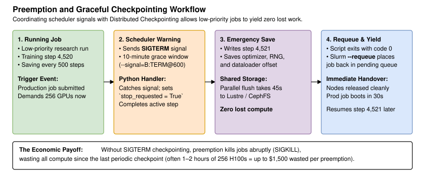
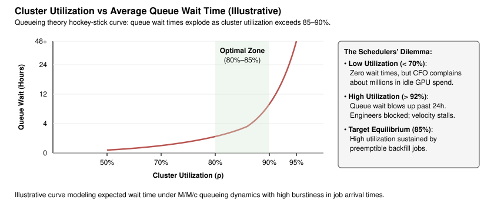

Job Scheduling - Slurm and Kubernetes
Introduction
Orchestrating large-scale AI training is fundamentally different from managing standard web applications or microservices. In cloud microservices, individual containers can be scheduled onto arbitrary nodes, scale up or down independently, and survive partial pod crashes without taking down the entire service. In distributed deep learning, a training job is a single tightly coupled parallel application spanning hundreds of GPUs.
Because distributed training relies on synchronous collective communication (Lesson 30, Cluster Networking and Collectives), all GPUs across all nodes must start at the exact same millisecond. Allocating 248 GPUs to a 256-GPU training job results in zero forward progress: the 248 active GPUs sit completely idle, blocked at the network barrier while consuming millions of dollars in hardware reservations. Managing these massive workloads requires specialized scheduling semantics: gang scheduling (all-or-nothing allocation), topology-aware placement (grouping nodes within identical network switch fabrics), and exclusive node allocation [1].

Today, AI engineering teams deploy one of two major scheduling paradigms: Slurm Workload Manager, the battle-tested standard of High-Performance Computing (HPC), or Kubernetes, extended with custom batch operators such as Kubeflow Training Operator and Kueue [2, 3]. In this lesson, we examine why distributed training demands specialized scheduling, analyze Slurm's multi-factor priority and launch mechanics, inspect the modern Kubernetes training stack, evaluate preemption and cluster utilization economics, and compare both schedulers to guide your infrastructure choices.
Clarifying the Problem
In a systems design interview for an AI infrastructure role, job scheduling questions typically explore how to maximize cluster throughput and arbitrate resources between long pretraining runs and fast-turnaround research jobs. Here is how a discussion between a candidate and an interviewer typically unfolds:
Candidate: What is the scale of our training cluster, and what workloads share the hardware?
Interviewer: We operate a cluster of 256 NVIDIA H100 80 GB SXM GPUs arranged across 32 nodes (8 GPUs per node). Our primary workload is pretraining a model with the Llama 3.1 8B architecture (8.03 billion parameters) on 1 trillion tokens, which takes roughly 5.5 days (33,800 GPU-hours, or ~$101,000 at $3.00 per H100-hour). However, our research team also runs dozens of small exploratory fine-tuning and ablation jobs daily.
Candidate: How are competing workloads prioritized when the cluster is fully occupied?
Interviewer: The 256-GPU pretraining run is our flagship production job. Research jobs must be able to run whenever capacity allows, but the pretraining job should preempt them when ready, or vice versa if urgent ablations take precedence. We need fair-share quotas to prevent any single team from monopolizing the GPUs.
Candidate: What network constraints must the scheduler respect during node allocation?
Interviewer: Nodes communicate over 400 Gb/s InfiniBand NDR in a rail-optimized fat-tree. If the scheduler scatters our 32 nodes across distant spine switches, collective communication latency will degrade step time. The scheduler must allocate contiguous nodes under the same leaf switches whenever possible.
Candidate: What scheduler architecture do we currently run, or are we choosing between Slurm and Kubernetes?
Interviewer: We need you to evaluate both. Can we launch and manage this 256-GPU run reliably on Slurm, what does the equivalent stack look like on Kubernetes, and which should we standardize on?
The question underneath is: How do we guarantee gang scheduling and topology-aware placement at 256-GPU scale, implement non-destructive preemption with distributed checkpointing, and maximize cluster utilization without blowing up queue wait times? To answer it, we begin with the fundamental scheduling requirements of deep learning.
Why Distributed Training Needs Specialized Scheduling
Gang scheduling: the all-or-nothing requirement
Standard cluster orchestrators (such as default Kubernetes) schedule containers one by one using a best-effort bin-packing algorithm. In microservices, if an application requests 10 replicas and the cluster only has room for 8, the 8 replicas boot and immediately start serving traffic. The remaining 2 replicas queue until space opens.
In distributed model training with PyTorch, this behavior is catastrophic. Before training begins, PyTorch's torch.distributed module executes a rendezvous protocol where all participating ranks connect to a shared key-value store (the c10d TCP store) to exchange network addresses and construct NCCL communication rings. If 31 of 32 nodes are provisioned, the 248 GPUs on those 31 nodes sit in a blocking loop waiting for the final 8 GPUs to join the rendezvous. They cannot execute a single forward pass, yet they hold their GPU reservations exclusively.
If two concurrent 128-GPU jobs submit simultaneously to a 192-GPU cluster, a naive scheduler might allocate 96 GPUs to Job A and 96 GPUs to Job B. Neither job has enough GPUs to satisfy its rendezvous barrier. Both jobs stall indefinitely, creating an unresolvable distributed resource deadlock where 100% of cluster GPUs sit idle while costing $3.00 per GPU-hour. Gang scheduling prevents this by enforcing an atomic condition: a job is admitted only if 100% of its requested nodes and GPUs can be bound simultaneously. If even one GPU is missing, the job remains in the pending queue without reserving any resources.
Topology-aware placement and rack locality
As demonstrated in Lesson 30 (Cluster Networking and Collectives), inter-node network bandwidth is 9× slower than intra-node NVLink, and communication across spine switches introduces latency jitter and potential congestion. When a scheduler assigns 32 nodes to our pretraining run, the physical placement of those nodes directly impacts training goodput.
In a multi-tier fat-tree network, server nodes located within the same physical rack connect to the same top-of-rack (ToR) or leaf switches. Traffic between nodes under the same leaf switch enjoys single-hop latency (sub-2 microseconds) and zero spine oversubscription. If the scheduler allocates nodes scattered across four different physical data center halls, collective All-Gather and All-Reduce packets must traverse multiple spine tiers, increasing the likelihood of ECMP hash collisions and tail-latency stragglers. Schedulers must support topology-aware scheduling, allowing jobs to request node allocations constrained within a minimum number of network switch boundaries [4].
Exclusive nodes versus shared nodes
In general cloud computing, multiple tenants share physical server hosts through CPU and memory cgroups. In AI supercomputing, multi-GPU server nodes must be allocated exclusively to a single job. Sharing a server node between an LLM pretraining job and an unrelated container causes severe performance degradation:
- PCIe and memory bus contention: If an external process runs intensive CPU-to-GPU data copies over the host PCIe bus, it degrades the PCIe bandwidth available to the local ConnectX-7 NIC, crippling GPUDirect RDMA throughput.
- Host CPU cache pollution and OS context switches: Distributed data loaders rely on dedicated host CPU cores for background data prefetching, tokenization, and decompression. CPU thread contention causes data starvation on the GPUs.
- NCCL environment interference: NCCL creates shared memory segments (POSIX shm) for intra-node communication. Multiple unrelated distributed jobs on the same node can trigger shared memory naming collisions or socket exhaustion.
High-performance schedulers enforce node exclusivity, ensuring the primary job possesses 100% of CPU cores, host memory, PCIe lanes, and GPU devices on the node.
Slurm for AI Supercomputing
Slurm architecture and multi-factor priorities
Simple Linux Utility for Resource Management (Slurm) is an open-source, highly scalable cluster management and job scheduling system used by the majority of the world's TOP500 supercomputers [1]. Slurm's architecture is centralized and lightweight, consisting of a central controller daemon (slurmctld) running on head nodes, a local daemon (slurmd) running on each compute node, and an optional database daemon (slurmdbd) for accounting and quota tracking (Figure 2).

Slurm determines the order of pending jobs using a configurable multi-factor priority plugin. A pending job's priority is a weighted linear combination of several independent factors [1]:
- FairShare factor: Slurm tracks historical resource consumption using a half-life decay algorithm (typically configured with a 7-day or 14-day half-life). If Team A has used 50,000 GPU-hours over the past week while Team B has used only 2,000 GPU-hours, Team B's FairShare factor is significantly higher. Their jobs will automatically jump ahead in the queue, preventing resource hogs from starving other engineers.
- Backfill scheduling: A critical feature of Slurm is its backfill scheduler. When a large 256-GPU job is waiting for nodes to drain, the scheduler calculates the expected start time of that job. If a small 8-GPU job is submitted that can finish before the large job's start time without delaying it, Slurm immediately starts the small job in the empty hole. Backfill scheduling routinely raises cluster utilization from 70% to over 90%.
Multi-node execution: sbatch, srun, and torchrun
Launching multi-node PyTorch training under Slurm requires coordinating three layers: the Slurm resource allocation (sbatch), the distributed task launcher (srun), and the PyTorch process manager (torchrun) [5].
A common mistake among AI engineers is setting --ntasks-per-node=8 when wrapping torchrun. If Slurm runs 8 tasks per node, and each task invokes torchrun with --nproc_per_node=8, the system spawns processes per node, crashing GPU memory immediately. The correct pattern uses srun to launch exactly one task per node (--ntasks-per-node=1), delegating process forking to torchrun. Figure 3 illustrates this execution pattern.

The standard multi-node launch sequence proceeds in four steps:
- Batch reservation: The engineer submits a script with
#SBATCH --nodes=32 --ntasks-per-node=1 --gpus-per-node=8 --exclusive. Slurm places the job in queue until 32 nodes are available. - Rendezvous discovery: Once nodes are allocated, the script queries Slurm's environment to elect the head node:
MASTER_ADDR=$(scontrol show hostnames "$SLURM_JOB_NODELIST" | head -n 1) MASTER_PORT=29500 - Task dispatch:
srun --cpu-bind=none torchrun ...starts onetorchrunagent on each of the 32 nodes. Setting--cpu-bind=noneis mandatory to prevent Slurm from pinning all 8 local GPU worker processes to a single CPU core. - Worker forking & rendezvous: Each
torchrunagent reads--nproc_per_node=8and forks 8 Python processes, binding each toCUDA_VISIBLE_DEVICES=0..7. The agents connect across the network to$MASTER_ADDR:$MASTER_PORTvia the PyTorch c10d TCP store, exchange IP addresses, initialize NCCL, and begin step 0.
Job arrays, requeue on failure, and topology flags
Slurm provides powerful operational primitives for long-running AI infrastructure:
- Automatic requeue (
#SBATCH --requeue): If a node experiences an unrecoverable hardware failure (e.g. an Xid 79 GPU bus error) or the job is preempted by a higher-priority workload, Slurm catches the non-zero exit or preemption signal and automatically places the job back into the pending queue. When paired with resilient checkpointing (Lesson 28), the job restarts on healthy nodes without human intervention. - Switch topology requests (
#SBATCH --switches=1@24:00): In clusters configured with Slurm's topology plugin (topology/tree), this flag instructs Slurm to allocate all requested nodes under a single leaf switch. The@24:00parameter specifies the maximum time (24 hours) the job is willing to wait in queue for an optimal leaf-switch topology before falling back to a multi-switch allocation. - Job arrays (
#SBATCH --array=0-15): Allows researchers to submit sweeps of hyperparameter ablations (learning rates, batch sizes) with a single command, throttling concurrency via--array=0-15%4(running at most 4 jobs simultaneously).
Kubernetes for Distributed Training
The cloud-native training stack
While Slurm dominates traditional HPC environments, modern enterprise AI platforms increasingly deploy Kubernetes (K8s) to unify training infrastructure with data ingestion pipelines, vector databases, and real-time model serving engines [2].
Because native Kubernetes Job resources lack support for gang scheduling, distributed rendezvous, and multi-node worker coordination, the cloud-native ecosystem relies on specialized Custom Resource Definitions (CRDs) and operators (Figure 4):
- Kubeflow Training Operator / PyTorchJob: The industry standard CRD for distributed PyTorch training [2]. A
PyTorchJobdefines aMaster(orWorker[0]) replica andWorkerreplicas. The operator automatically provisions a headless Kubernetes Service for the master pod, injectsPET_MASTER_ADDR,RANK, andWORLD_SIZEenvironment variables into each container, and coordinates job lifecycle. Recently, the Kubeflow community is evolving this operator into Kubeflow Trainer v2, introducing a unifiedTrainJobAPI. - JobSet (Kubernetes SIG-Apps): A lightweight controller designed specifically for multi-node batch workloads [6]. Unlike older controllers that manage individual pods, JobSet manages groups of homogeneous Kubernetes
Jobsas a single unit, providing built-in gang scheduling semantics, configurable restart policies, and unified failure domains. - NVIDIA GPU Operator & Network Operator: Manages the low-level infrastructure stack inside Kubernetes containers: installing the NVIDIA driver container, CUDA runtime, K8s Device Plugin (exposing
nvidia.com/gpu), and Mellanox OFED drivers for GPUDirect RDMA.

Gang scheduling and queue management: Kueue and Volcano
To provide Slurm-equivalent gang scheduling and multi-tenancy in Kubernetes, two primary batch scheduling projects are deployed:
Kueue (Kubernetes SIG-Apps / Batch Working Group) is a cloud-native job queue controller [3]. Rather than replacing the default Kubernetes kube-scheduler, Kueue operates at the admission layer. Workloads (such as PyTorchJob or JobSet) are submitted with suspend: true and a label pointing to a LocalQueue:
metadata:
labels:
kueue.x-k8s.io/queue-name: research-team-queue
spec:
runPolicy:
suspend: trueKueue manages ClusterQueues with defined resource quotas, borrowing rules across team cohorts, and workload priority. Once Kueue determines that sufficient GPUs exist across the cluster to satisfy the job's entire request, it patches the resource to suspend: false, allowing all pods to be scheduled at once. Kueue delegates pod-to-node placement to the kube-scheduler or topology-aware plugins.
Volcano (CNCF Incubating) is an alternative purpose-built batch scheduler that replaces kube-scheduler [7]. Volcano introduces the PodGroup CRD, which tracks the minimum number of member pods required for a job (minMember: 32). Volcano's scheduling engine evaluates all pods in the group atomically: if all 32 pods cannot be placed on suitable nodes, none are scheduled. Volcano also provides native support for task-topology scheduling and bin-packing.
Slurm versus Kubernetes: architectural comparison
Both schedulers can successfully execute our 256-GPU pretraining run, but they differ fundamentally in operational model, scheduling latency, and platform maturity. Table 1 provides a direct engineering comparison.
| Feature / Dimension | Slurm Workload Manager | Kubernetes (Kueue + PyTorchJob / JobSet) |
|---|---|---|
| Primary Design Goal | High-Performance Computing (HPC) & bare-metal batch execution | Cloud-native container orchestration & multi-workload unification |
| Gang Scheduling Mechanism | Native (built-in atomic multi-node reservation) | Requires add-on controllers (Kueue or Volcano PodGroup) |
| Scheduling Latency | Sub-second (dispatches thousands of jobs per minute) | Several seconds to minutes (API server & etcd serialization) |
| Network Topology Awareness | Native (--switches with tree/rail topology plugins) | Emerging (Kueue Topology-Aware Scheduling / TAS plugin) |
| Multi-Tenancy & Fair Share | Built-in multi-factor priority with historical decay | Built-in via Kueue cohorts, borrowing, and LocalQueues |
| Hardware Containerization | Optional (native execution, Enroot, or Apptainer / Singularity) | Mandatory (Docker / OCI containers via containerd) |
| Fault Recovery & Requeue | Built-in --requeue flag and job state tracking | Handled by Operator (restartPolicy: OnFailure) or JobSet |
| Ecosystem Integration | Standard HPC monitoring (Slurm DBD, Prometheus exporters) | Native cloud-native ecosystem (Prometheus, Grafana, Argo, Ray) |
| Operational Complexity | Low to Moderate (single binary daemons, static config) | High (control plane, etcd, CRD operators, CNI, CSI, mesh) |
Table 1: Architectural comparison: Slurm versus Kubernetes for distributed training
Cluster Economics: Preemption, Quotas, and Utilization
Preemption workflows and checkpoint integration
Maximizing the return on investment of a $10M+ GPU cluster requires running the cluster near full capacity 24 hours a day. Schedulers achieve this through priority preemption: allowing low-priority exploratory jobs (such as hyperparameter searches or student experiments) to fill idle GPUs, while guaranteeing that flagship production jobs can evict them immediately when ready.
However, evicting a distributed training job abruptly via SIGKILL destroys all training progress since the last saved checkpoint, wasting tens of thousands of dollars in compute. Robust training platforms implement coordinated graceful preemption [8] (Figure 5):

- Grace period notification: When a high-priority job arrives, Slurm or Kubernetes sends a
SIGTERMsignal to the low-priority job instead of killing it immediately. Slurm configures this via#SBATCH --signal=B:TERM@600(warning the batch script 600 seconds before termination). In Kubernetes, this is configured viaterminationGracePeriodSeconds: 600. - Signal handling in PyTorch: The training script registers a Python signal handler (
signal.signal(signal.SIGTERM, handler)) that sets a global flag (stop_requested = True). - Synchronized emergency checkpoint: Rather than aborting mid-step, all ranks complete the current forward and backward pass, execute the optimizer step, and immediately trigger a PyTorch Distributed Checkpoint (DCP) save to shared network storage (Lesson 28, Checkpointing). Because DCP writes shards in parallel, an 8B model checkpoint completes in under 30 seconds.
- Clean exit and requeue: The script exits with status code 0. Slurm's
--requeueflag or Kueue's workload manager moves the job back to the pending queue. When nodes become available again, the job restarts and resumes seamlessly from the exact step saved during preemption, resulting in zero lost GPU-hours.
The cost of queue time and cluster utilization
Cluster management involves a fundamental trade-off between utilization (percentage of GPU capacity actively computing) and queue wait time (how long engineers wait for their jobs to start) [9].
According to queueing theory (specifically Kingman's formula for queueing models), expected queue wait time is non-linear with respect to cluster utilization :
Figure 6 illustrates this behavior. As cluster utilization increases from 50% to 75%, queue wait times rise slowly and predictably. However, past 85% utilization, queue wait time experiences a catastrophic exponential explosion. At 95% utilization, a job requesting 32 nodes might wait days or weeks for enough nodes to drain simultaneously to satisfy gang scheduling.

If an infrastructure team targets 98% utilization to impress finance executives, engineering velocity plummets: researchers wait 36 hours to run a 2-hour debugging ablation, destroying productivity. Conversely, running at 60% utilization provides instant job startups but leaves millions of dollars of hardware idle. The industry standard sweet spot is 80% to 85% steady-state utilization, achieved by using large pretraining runs as anchor workloads and aggressive backfill scheduling with preemptible jobs to absorb transient capacity dips.
Slurm or Kubernetes for our team?
We can now answer the interviewer's strategic question: Should we deploy Slurm or Kubernetes for our 256-GPU cluster?
The decision depends entirely on organizational context and workload diversity:
- Choose Slurm if: The cluster is a dedicated, bare-metal GPU supercomputer whose primary purpose is large-scale pretraining and foundation model research. Slurm offers near-zero control-plane overhead, native sub-second gang scheduling, superior topology-aware node selection across InfiniBand switches, and proven stability at 10,000+ GPU scale. It eliminates the maintenance burden of Kubernetes etcd clusters, CNI networking plugins, and complex CRD operators.
- Choose Kubernetes (with Kueue + PyTorchJob / JobSet) if: The GPUs belong to a broader enterprise cloud platform where training jobs must integrate with containerized data pipelines (Spark, Kafka), feature stores, real-time inference microservices (vLLM, Triton), and shared identity providers. Kueue brings production-grade multi-tenancy and quota management to Kubernetes, making it viable for shared enterprise AI infrastructure.
For our specific scenario—pretraining Llama 3.1 8B on 256 H100s for a 5.5-day production run—Slurm provides the highest reliability, lowest latency, and simplest operational model.
In Practice
The first tab provides a production-grade multi-node Slurm submission script (sbatch.sh) that configures exclusive 32-node allocations, topology-aware network placement, graceful SIGTERM checkpointing, and torchrun execution. The second tab provides the equivalent cloud-native Kubernetes manifest deploying a PyTorchJob integrated with Kueue for queue admission and gang scheduling.
#!/bin/bash
#SBATCH --job-name=llama3-8b-pretrain
#SBATCH --nodes=32 # 32 nodes * 8 GPUs = 256 H100 GPUs
#SBATCH --ntasks-per-node=1 # Crucial: 1 task (torchrun instance) per node
#SBATCH --gpus-per-node=8 # Allocate all 8 GPUs per node
#SBATCH --cpus-per-task=64 # Dedicated CPU cores per node
#SBATCH --exclusive # Exclusive node reservation (no noisy neighbors)
#SBATCH --partition=gpu-batch # Target batch partition
#SBATCH --qos=production # High priority production QOS
#SBATCH --requeue # Automatically requeue on node failure
#SBATCH --signal=B:TERM@600 # Send SIGTERM 10 min before walltime / preemption
#SBATCH --output=logs/%x-%j.out
#SBATCH --error=logs/%x-%j.err
# 1. Environment & InfiniBand Network Optimization
export NCCL_DEBUG=INFO
export NCCL_DEBUG_SUBSYS=INIT,COLL,ENV,NET
export NCCL_IB_DISABLE=0
export NCCL_NET_GDR_LEVEL=5
export PYTHONUNBUFFERED=1
# 2. Extract Master Address & Port for PyTorch c10d Rendezvous
export MASTER_ADDR=$(scontrol show hostnames "$SLURM_JOB_NODELIST" | head -n 1)
export MASTER_PORT=29500
echo "=== Slurm Job Allocation Details ==="
echo "Job ID: $SLURM_JOB_ID | Allocated Nodes: $SLURM_JOB_NUM_NODES"
echo "Rendezvous Head Node: $MASTER_ADDR:$MASTER_PORT"
echo "Total Ranks: $((SLURM_JOB_NUM_NODES * 8)) GPUs"
echo "====================================="
# 3. Launch with srun wrapping torchrun
# --cpu-bind=none prevents Slurm from pinning worker processes to a single core
srun --cpu-bind=none torchrun \
--nnodes=$SLURM_JOB_NUM_NODES \
--nproc_per_node=8 \
--rdzv_id=$SLURM_JOB_ID \
--rdzv_backend=c10d \
--rdzv_endpoint="$MASTER_ADDR:$MASTER_PORT" \
train.py \
--model-config configs/llama3_8b.json \
--checkpoint-dir /mnt/shared/checkpoints/llama3_8b \
--batch-size 2 \
--seq-len 8192Other Talking Points
If there is extra time at the end of the interview, here are some additional talking points:
- Slurm Pyxis and Enroot: Rather than running Python directly on host operating systems, modern HPC clusters use NVIDIA Enroot and the Slurm Pyxis plugin (
#SBATCH --container-image=...) to execute containerized Docker images natively with zero root daemon overhead. - Kubernetes Device Plugins and Health Checks: If an H100 SXM GPU drops off the PCIe bus due to an uncorrectable ECC error, the NVIDIA K8s device plugin marks the node
NotReadyor taints the node, preventing newly scheduled jobs from landing on the broken hardware. - Gang Scheduling with DRA (Dynamic Resource Allocation): In newer Kubernetes releases (v1.30+), Dynamic Resource Allocation (DRA) allows fine-grained topology matching between GPUs and specific NUMA nodes / InfiniBand NICs directly within the core scheduler.
- Job Arrays for Hyperparameter Tuning: Submitting 100 fine-tuning runs using Slurm job arrays (
--array=1-100%8) allows automatic job slot reuse without overwhelming the scheduler daemon with hundreds of individual job entries. - Walltime management and checkpoint staggering: HPC clusters enforce strict job walltimes (e.g. 24 or 48 hours). Production pretraining workflows configure automated wrapper scripts that monitor elapsed walltime and trigger a planned checkpoint 15 minutes before the limit expires.
- Fair-share decay math: In Slurm, historical usage decays exponentially according to , where . Sizing the half-life prevents seasonal holidays or project deadlines from distorting long-term quota fairness.
Summary
- Distributed LLM training requires gang scheduling: all 256 GPUs must be bound simultaneously. Partial allocations trigger distributed deadlocks where GPUs idle indefinitely at the rendezvous barrier.
- Topology-aware placement schedules nodes under identical leaf switches, minimizing collective latency and eliminating cross-spine InfiniBand contention. Multi-GPU nodes must be allocated exclusively.
- In Slurm, multi-node training uses
sbatchfor exclusive allocation,srunwith--ntasks-per-node=1, andtorchrunto fork 8 local ranks per node and connect to the c10d TCP store. - Slurm arbitrates competing workloads using multi-factor priorities (combining age, fair-share historical decay, and QOS) alongside backfill scheduling to maximize cluster utilization.
- Kubernetes orchestrates distributed training via Custom Resources (Kubeflow
PyTorchJob,JobSet) paired withKueuefor queueing, team quotas, and gang admission. - Coordinated preemption delivers a
SIGTERMsignal with a 10-minute grace period, allowing the training loop to save an emergency distributed checkpoint before yielding nodes, resulting in zero lost compute. - Cluster utilization exhibits a non-linear hockey-stick relationship with queue wait time: targeting 80% to 85% utilization balances hardware efficiency with rapid engineering turnaround.
Reference Material
[1] Yoo et al. SLURM: Simple Linux Utility for Resource Management. https://slurm.schedmd.com/.
[2] Kubeflow Community. Kubeflow Training Operator Documentation. https://www.kubeflow.org/docs/components/training/.
[3] Kubernetes SIG-Apps. Kueue: Kubernetes-native Job Queueing. https://kueue.sigs.k8s.io/.
[4] Dubey et al. The Llama 3 Herd of Models. https://arxiv.org/abs/2407.21783.
[5] PyTorch Documentation: Distributed Elastic and torchrun. https://pytorch.org/docs/stable/elastic/run.html.
[6] Kubernetes SIG-Apps. JobSet: Managing Sets of Jobs in Kubernetes. https://jobset.sigs.k8s.io/.
[7] Cloud Native Computing Foundation. Volcano: High-Performance Batch Scheduling System for Kubernetes. https://volcano.sh/.
[8] Mohan et al. CheckFreq: Frequent, Fine-Grained DNN Checkpointing. FAST 2021. https://www.usenix.org/conference/fast21/presentation/mohan.
[9] Kleinrock. Queueing Systems, Volume 1: Theory. https://dl.acm.org/doi/book/10.5555/540098.
![ask alex]()
![ask alex expend]()